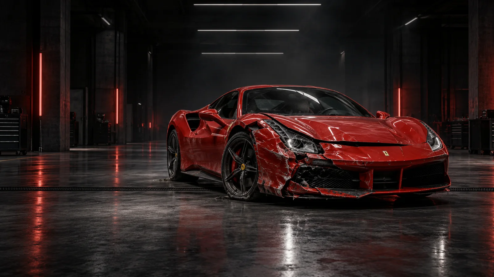
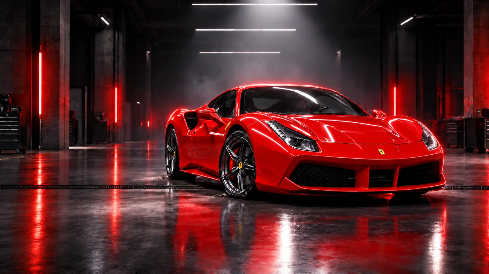
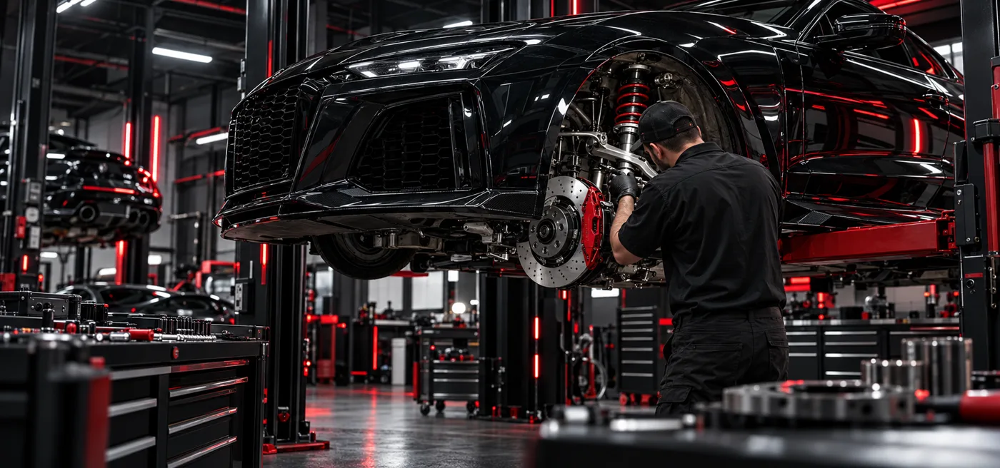
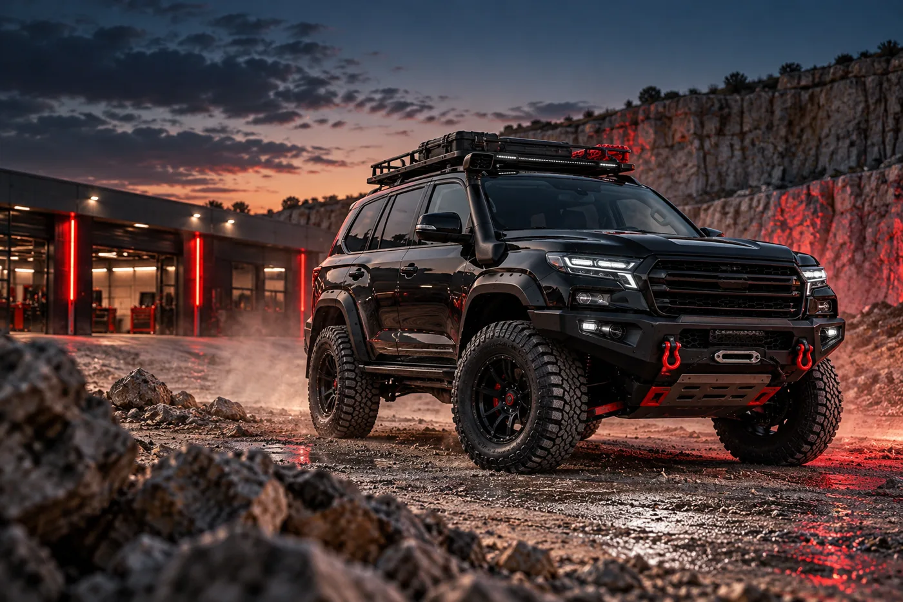

ONE CAR.
EVERY SYSTEM.
Keep scrolling. The vehicle stays with you while each Titan discipline comes into view.
- Mechanical
- Bodywork
- Paint
- Restoration
Scroll to begin the repair
Damage is mapped before metal is moved.
Shape. Primer. Paint. Reflection.
Bodywork, paint and mechanical care measured to the last reflection.
Request an assessment ↗Scroll to orbit / move to inspect
Keep scrolling. The vehicle stays with you while each Titan discipline comes into view.
Diagnostics, servicing and repairs built around dependable road performance.
Collision damage mapped, corrected and aligned before the surface is ever painted.
Controlled preparation, colour matching and clear coat engineered for an uninterrupted reflection.
Classic and specialist vehicles rebuilt with respect for what made them worth saving.
Performance upgrades, custom fabrication and complete automotive projects with a clear purpose.
Vehicle recovery and the right components to carry the repair from first call to final inspection.
Drag the inspection line. The same car, the same angle—before correction and after final polish.


Restorations, custom builds and specialist vehicles—each one treated as its own engineering problem.

Where reliability, response and finish have to work as one.

Functional modifications designed around the journey.
Recovery is part of the repair journey. Start the conversation from the roadside and bring the vehicle directly into the Titan workflow.
Request recovery ↗Components selected around fit, function and the intended use of the vehicle—not simply what appears in a catalogue.
Enquire about a part ↗No invented awards. No vague promises. Just a visible method, a clear assessment and work you can inspect under the light.
Understand the damage, objective and constraints.
Agree the repair path before major work begins.
Complete each discipline against the same standard.
Review alignment, function and finish before handover.
Tell us what happened, what the car needs, or what you want to build. We’ll start with an honest assessment.
Request an assessment ↗